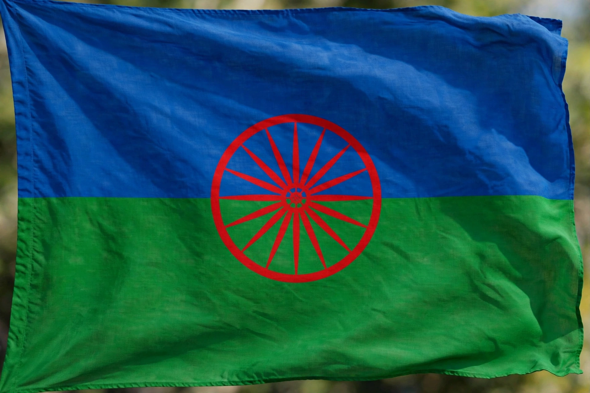

From Wikipedia, the free encyclopedia
| Romani people | |
|---|---|
 | |
| Total population | Estimated 10–12 million worldwide (2–3 million in Europe per some estimates; commonly 10–12M globally) |
| Regions | Europe (Romania, Bulgaria, Hungary, Spain, Serbia), Americas, Turkey |
| Languages | Romani (an Indo-Aryan language), plus local majority languages |
| Religions | Predominantly Christianity and Islam, varying by region |
The Romani people (also spelled Romany or Rromani; colloquially known in English by the exonym Gypsies) are an Indo-Aryan ethnic group who traditionally lived a nomadic, itinerant lifestyle. Linguistic and genetic evidence indicates that they originated in northern India and migrated westward, reaching Europe by the 14th–15th centuries.
The Romani language is closely related to the languages of north-western India, and Romani oral tradition preserves the memory of the migration. In Europe, Roma were long marginalised, enslaved in the Romanian principalities until the mid-19th century, and persecuted under various anti-Gypsy laws. During the Second World War, the Nazi regime and its allies murdered hundreds of thousands of Roma in the Porajmos (the Romani Holocaust), many of them in extermination camps such as Auschwitz-Birkenau, where a "Gypsy family camp" was liquidated in August 1944.
Romani culture is diverse across subgroups (including Kalderash, Sinti, Kale, Romanichal and many others) but commonly values extended family, Romani language and customs of purity (marime). The first World Romani Congress, held near London in 1971, adopted the Romani flag and anthem ("Gelem, Gelem"). Roma remain Europe's largest ethnic minority and face persistent discrimination in housing, education and employment, though Romani political and cultural organisations have grown since 1989.
See also: Extermination camp · Auschwitz concentration camp · Romani language